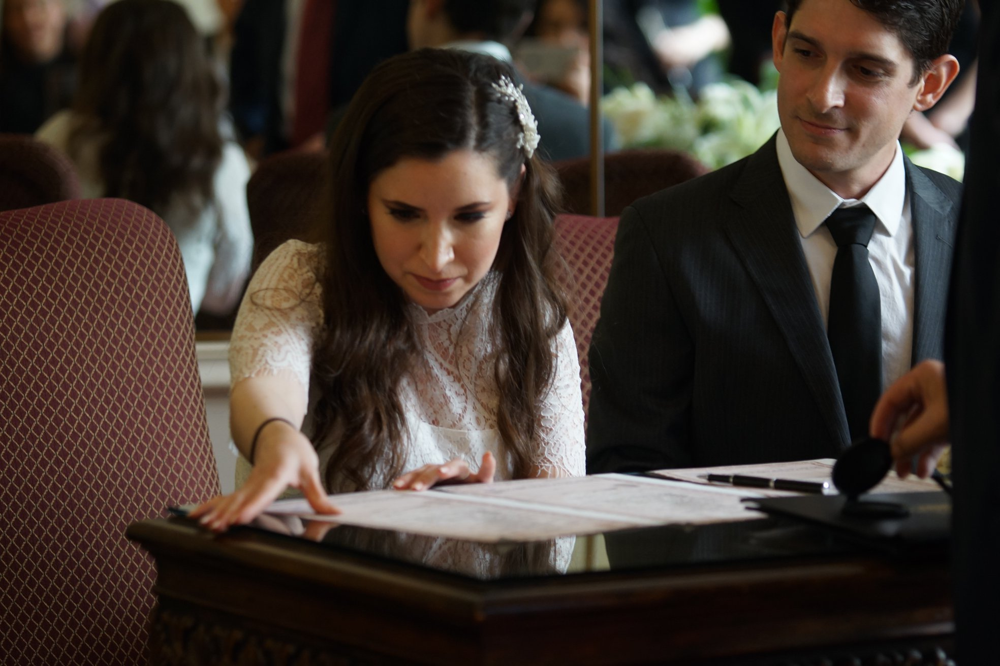
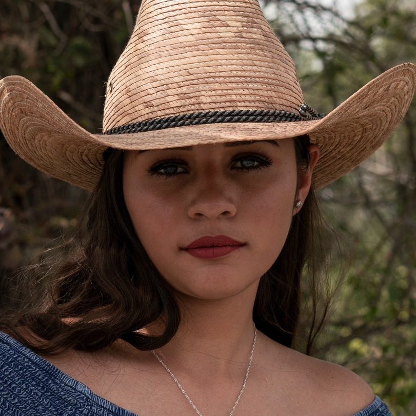
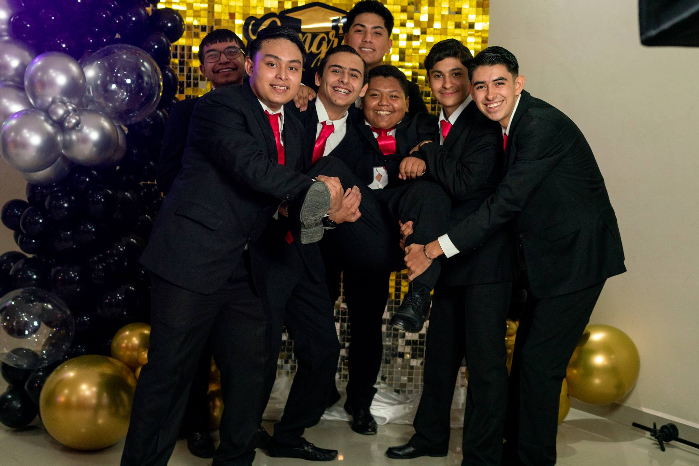

La Sessione Fotografica
🌿 La Sessione Fotográfica somos un buscador de luz y emociones, alguien que cree que cada instante guarda un significado profundo cuando se mira con el corazón. La fotografía, para mí, no es solo capturar imágenes, sino honrar el alma de los momentos, detener el tiempo en un suspiro y transformarlo en arte. Mi enfoque es espiritual y creativo: busco conectar con la energía única de cada persona y transmitirla en imágenes que hablen por sí mismas. A través de mi lente, descubro historias que merecen ser contadas, gestos que revelan lo invisible y paisajes que despiertan el alma. Cada sesión fotográfica es un encuentro sagrado entre la luz, la vida y la mirada interior. Aquí no solo se crean fotografías, se despiertan memorias y se construyen símbolos de lo eterno. Bienvenido a La Sessione Fotográfica, un espacio donde tu esencia se convierte en imagen.
Sobre el Fotografo
Soy un fotógrafo que encuentra en la luz y en los pequeños detalles la manera de contar historias. Creo que cada persona guarda una esencia única y mi misión es capturarla con sensibilidad, creatividad y un enfoque espiritual. En cada sesión busco más que una imagen: busco un reflejo auténtico del alma y del momento irrepetible que estás viviendo. Bienvenido a La Sessione Fotográfica, donde tu historia se transforma en arte.
Ubicación
De La Pileta Villa de San Miguel, Guadalupe, N.L.
Horario
Lunes a Sábado
6:00 AM - 6:00 PM
Contacto
 Tel: (52) 81 3537 1693
Tel: (52) 81 3537 1693
Email: bladiromo53@gmail.com
 Facebook: La Sessione Fotografica
Facebook: La Sessione Fotografica
Nuestros Servicios

Bodas
Inmortalizamos el día más especial de tu vida

Retratos
Sesiones personalizadas en estudio o exteriores

Eventos
Cubrimos todo tipo de eventos especiales
Nuestros Paquetes
Sesión Casual o Formal
Lunes a Jueves: $1,800
Viernes a Domingo: $2,300
- 🟤90 minutos de sesión (minimo 3 dias antes del evento)
- 🟤30-50 fotos en alta resolución con edición básica
- 🟤Entrega en enlace de descarga por internet, 20 días máx.
- 🟤En caso de un XV años se realiza la sesion con el vestido
Casual y Formal
Lunes a Jueves: $3,300
Viernes a Domingo: $4,000
- 🟤Sesión hasta 2.5 horas en locación (mínimo 30 días antes del evento).
- 🟤Se entregan aproximadamente de 30-50 fotografías digitales (jpg) en alta resolución, con edición básica.
- 🟤Entrega en enlace de descarga por internet, 20 días máx.
- 🟤IEn caso de ser un XV años, se inicia la sesión con vestido de XV y despues se cambia a ropa casual